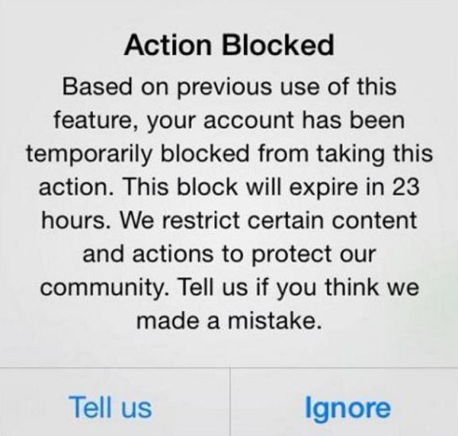

If you’re into Instagram I am sure you’ve probably experienced or heard of someone experiencing action blocks. Instagram made new changes to their algorithm starting June and these blocks started to happen more and more.
There are many theories out there, some more decent than others. It is not yet known though if these blocks are totally intentional or just an error on their part. This is due to the fact that a lot of regular people that have never used automation in their life seem to be getting blocked as well. It might be a new spam filter gone bad, an error on their part, or they are just testing around until they find the sweet spot.
Whatever it is, it is clear that they are serious about stopping the people that want to use their platform for marketing and they are growing their accounts organically rather than paying for their ads.
There are many things that can be said about this, however most is just speculation. What we can do is see how to deal with the problem with the tools we have at our disposal.
First of all we should all understand that the age of following/unfollowing 1000 people per day is gone. It was fun while it lasted, however we do need to focus on other strategies to help grow our accounts.
Instagram was incredibly permissive with their daily limits for the follow tool – let’s be serious, no normal user follows and unfollows that much each and every day. There are good things about this though:
- Many spammers will give up on Instagram automation which means that your targeted audience will be receiving fewer notifications overall, thus yours will get noticed faster.
- It’s probably the end of “social signal panels” or they will get extremely expensive since it will be harder than ever to provide such a service so again, there will be more place for your accounts to shine
- You’ll have the time to learn and implement new strategies to get more attention on your account and when you’ll be able to follow again you’ll get better results with fewer actions.
Why was everyone using the follow-unfollow method so much ?
That’s because it was the easiest! Every new person coming to Instagram “marketing” read that one first. You follow and unfollow enough people and eventually your account will grow. From now on you’ll have to think more, to create a strategy and do everything you can to get more targeted eyeballs on your account. There are a lot of other actions you can do on Instagram to attract attention, you’ve just probably never bothered with them till now.

So let’s see what exactly you can do to get over this dark period.
1. Use the contact tool more
This doesn’t mean you should start spamming messages now. Be smart, take it easy, try to look like a normal user so they will have no reason to block any action you do. Start slow and do more actions gradually. Here’s what you can do:
- Use the Contact Tool to promote your brand by dropping a message to probable clients.
- You can message people who liked and commented on your posts or target posts.
- Express your gratitude to those who have interacted with your content, answer queries and at the same time grab the opportunity to disseminate key details about your product.
2. Post to your Stories as well
Posting quality content on your accounts is a must but as a supplement, you can publish to your Stories multiple times a day.
You take advantage of this Instagram feature to encourage engagement on your account.
Experiment on the different things you can accomplish when you post to your Stories as discussed on How Instagram Stories Can Enhance Account Growth
3. Use the Like, Comment, Story Viewer and the Like Comments tools
- Liking Posts – You can use the Like Tool and start giving likes to posts published by people of your preferred niche.
- Comment on Posts – Leave a warm and genuine comment on the posts that are relevant to your niche using the Comment Tool.
- View Stories – The Story Viewer Tool is one of the recommended actions you can execute when warming up the accounts all the way to maturity. You can choose to view stories of people who engaged with your target posts, your own followings, and more.
- Liking Comments – Show acknowledgement to people who leave comments not just on your posts but on posts applicable to your market. Use the Like Comments Tool and start giving hearts where it is needed.
4. Use the delete posts tool
Keep a well structured profile, tidy up your account’s wall and make it enticing. You can use the Delete Posts Tool to remove irrelevant contents and retain quality posts or posts that have high engagement.
5. Take advantage of the Like Exchange tool to rank your posts higher for related hashtags
Ranking your posts in the hashtags section related to your niche is one of the most important ways you can grow your Instagram account organically and we developed a tool that can help greatly with that, it’s called the Like Exchange and you can read more about how it works here: The Like Exchange Tool.
Make sure you publish high quality posts and use the right hashtags. You can read the following guide on how to do hashtag research: Complete Instagram Hashtag Research for Any Niche With JARVEE.
In the last update we added the following feature:
“Campaign Instagram – Added option in Overview Advanced Settings Instagram to Add alt text to your image posts. Enable it if you want alt text to be posted. Very useful for SEO, you can read about the option here : https://blog.iconosquare.com/instagram-alt-text/ “
Don’t forget to take advantage of that feature as it will help rank your posts for those hashtags, just make sure you use the right relevant words and hashtags inside the alt image text.
6. Keep using the follow/unfollow strategy but at a much slower pace.
All these changes don’t mean the follow-unfollow strategy is dead. You just need to be more careful about it, better target the people you want to follow so you don’t waste actions on bot, dead or useless accounts.
Keep it slow, many people are talking about a 6000 follow limit within a 30 day period, that would mean a maximum of 200 follows per day. I’d say that is still too much, but it’s up to you. If you have several accounts feel free to test for yourself. Even with 100 highly targeted follows per days you will do fine. Try to use the sniper approach instead of the shotgun one.
If you had/have a block on your account wait for it to pass. Then start following again very very slowly. I’d give it a week after the block was lifted and start with 10 follows per day and grow it daily with 1-2 more follows. Baby steps but you will get there!
7. Ultimately – Instagram is not the only answer, promote your Instagram account on other social networks as well
Don’t set your social media marketing strategy in a way that it only focuses or relies too much on one social media network, a lot of businesses were hit hard in the last few months when Facebook updated their algorithm and decreased pages reach.
On the other hand, businesses who didn’t focus solely on Facebook weren’t affected as much.
Below, I will mention a few methods you can use to promote your business on other Social Networks as well.
If you are an agency and using Jarvee to grow your clients Instagram Accounts, you can use these methods to promote their Instagram Accounts and once you get familiar with a specific Social Network, you can add it to the list of your services.
I will keep things short so this post doesn’t turn into a book, you can also use Google to find other strategies to promote your business on Social Media:
- Facebook:
-
- Use the Group Finder Tool to find niche related groups and use the Joiner Tool to join them and then promote your business or account there (How To Post On Facebook Groups Without Getting Penalized).
- Extract pages likers or group members and send them a friend request and then message them about your business using the Contact Tool.
- Use the Comment & Like Tool to comment on posts.
- Use the Like Comments Tool to like users comments on posts related to your niche. Most of them will be curious to see who liked their comment and they will visit your profile where you will have posts about your business.
- LinkedIn:
-
- Use the Group Finder Tool to find niche related groups and use the Joiner Tool to join them and then promote your business or account there.
- Use the Comment Tool to comment on posts.
- Use the Follow Tool, Like Tool, Profile Viewer Tool, Connector Tool and the Endorse Connections Tool to get people to visit your Linkedin profile.
- Twitter:
-
- Use the Follow / Unfollow method.
- Use the Favorite Tool to get attention to your profile.
- Pinterest:
-
- Use the Follow / Unfollow method.
- Use the Comment Tool to comment on posts and get attention to your Profile.
- Tumblr:
-
- Use the Follow / Unfollow method.
- Use the Like Tool to get attention to your profile.
- Youtube:
-
- Use the Follow / Unfollow method.
- Use the Like Tool, Comment Tool and Like Comments Tool.
- Quora:
-
- Use the Upvote Tool to Upvote your answers and rank them on top of all other answers.
We have a Social Exchange Tool for all these social networks. So, don’t forget to take advantage of it to rank your posts higher for the Hashtags.
Conclusion:

It’s is never the end, just a new beginning. Don’t give up, adapt and you will do just fine! You might do even better since there will be less competition.
The hard truth is that there is no way around this, there is no “solve” even though that is probably what you are looking for. This is coming directly from Instagram and it appears to be here to stay so the only way to go forward is to adapt. The sooner you realize that the sooner you get back on track.
If you’re still interested in Instagram, you can find more useful information and strategies on our comprehensive free Instagram course: INSTAGRAM AUTHORITY BY JARVEE
Emil says
All this is nicely said to minimize loss of your client base, but how about this. Stop with automation or you risk getting your account banned/suspended. Accounts below 6000 follow actions are also getting blocked. Even before there were many problems, with targeting as follow-unfollow is total spam and get you bunch of non relevant followers from Africa and India, then problems with proxies and with many other things. Twitter is almost impossible to automate they upgraded security long before instagram and even after few follows you get blocked. LinkedIn don’t even try, and facebook same security as Instagram or worse. I think you guys should be more honest to your clients. Its not simple as it used to be few years ago we all see it. You know this too, and that is why you increased prices because it wont last long until tools like this one completely stop working.
Adam says
It’s as you said, accounts below 6000 follow actions are also getting blocked even normal people’s accounts are getting blocked. This is a problem on their side and it’s not related with automation. As long as people do marketing on IG there will always be a need for automation unless you want to hire someone dedicated to do this for you at 200 times the cost, and even then you will have blocks.
The targetting – seems to me like you’re not doing it properly, that’s why it’s called targetting, to find human accounts that will follow back, not spam accounts. The proxies and everything else necessary – they were always there, nothing has changed.
As for it not working or new security measures, again, it comes with the territory. And yes, it’s definitely not as simple as it used to be, no one is saying that. For that reason some will give up and some will find the ways to make it work and will do even better than before. It’s not for everyone, it never was, it’s definitely not a get rich fast scheme, it requires work, constant testing and keeping on top of all the new changes. However it will never completely stop working. As long as there will be businesses wanting to promote themselves on these platforms there will also be people offering marketing services on the same platforms.
Dario says
Applause for Adam <3
Adam says
Thanks 🙂
Nicola says
Definitely you have a point 🙂
Thanks for the post, quite well done and interesting to read!
One quick question if I may: what’s the most average “conversion” rate you saw in your experience (assuming all the other aspects of the page are well set and properly working: quality of the content, regular appealing stories, etc) in a follow/unfollow strategy? I started with a quite flattering 30-40% and then (always using same hashtag as a test), dropped down to a quite low 1-5%.
Thanks again,
Nicola
Bruce says
When you notice that your followback rate started dropping, it’s a sign you depleted your sources and you should change them.
Best followback ratio, at least from my experience, is accomplished when you’re targeting “users who interacted with posts on target accounts”. When using this source, make sure your target accounts have a lot of followers and high engagement rate.
Anyway, it’s not a rule, it can depend on niche too, so hashtags might work better for you. Experimenting until you find perfect formula is the key, as always…
Nicola says
Thanks a lot Bruce, much appreciated 🙂
Makes perfect sense.
In order to do exactly that, my problem was to make this action efficient: at the moment I’m screening manually all the potential target accounts, looking for the one who can respond best to my content, profile, hashtag etc.
The problem is indeed to make that more effective:
Jarvee allows for a quite targeted selection according to how many followers/following, actions, etc. they have, but obviously it’s automated and I would like to screen the results for a networking purpose, in order to contact some of them for shoutouts and cooperations.
Considering that sometimes I need to shut down the bot etc in order to stay low profile as much as possible and not to risk too many blocks, do you know if there is an app able to allow me to create a list of potential target accounts (allowing me to decide explicitally how many followers they must have, what kind of content and hashtag etc.)
Thanks again,
Nicola
Bruce says
We have “Users and Hashtags” tool for IG. You can search for target accounts there, filter them by number of followers and engagement rate.
Ally says
Hi, we are still all blocked and I want to know that people that used follow/unfollow will be blocked forever?? As a sort of ban or something?!
Adam says
No, that will definitely not happen, blocks are not new, they have been around for a long time and they always pass. You can see inside your account for how long you cannot do an action. After the restriction is lifted make sure to take it easy and slowly grow the number of actions.
Alex says
Hi Adam, you say it’s possible to see how long the block will last, but all the “new” blockings don’t have a time and date of ending like before… or is there any other place where we can see this info?
Regards
Adam says
Yes, I’ve seen this with some accounts as well, some show the info, some don’t. Not sure yet if it’s related to the actual account, when it was created/ how they see it or if it’s an update they will roll to everyone. If they don’t show the info though, there’s no other way to get it, you’ll just have to try and see if the account is unblocked every couple of days.
Diana says
I have been blocked for a week. It exactly says the date – from today till the 25th of August.
Kumar says
We have accounts that are follow blocked for over 2 weeks. Do you have any accounts in this state that have been unblocked yet?
Adam says
Yes, it can sometimes take longer but they will get unblocked, max that I saw was a month.
Centurion says
I was Follow Action blocked for good 3 weeks. But now I am fine. I would take a break from follow/unfollow and then resume with safest possible settings.
ruben says
I have my account locked in the follow tool will do 2 weeks, I start to get worried someone has gone through it ?
Adam says
It will pass, just make sure to re-start very slowly
JlUIS says
I’m in trouble, lock in instagram and the jar does not open anymore on windows, the days of my license is flying.
How can I pause the time
Adam says
Please contact support about this. As for the pause, there is no such feature, sorry.
John says
Is report the isue (using Tell us) is a good idea?
Adam says
You can definitely try it, start with one account and see if it does anything.
Oth says
So, you’re pratically saying it’s the beginning of the end of Instagram marketing? since there is absolutely no change for things to go back as they were, I presume that’s it,, it’s going to fade because the margin of profit is getting smaller everyday.
And do you have leads you can share with me for alternative methods on other social medias?
Adam says
No, not really, where did I say that? As long Instagram will remain a top platform there will always be people that will want to market on it for good reason. What marketing you can do on the platform and how you do it will change though. Things will not go back to how they were, definitely, we are all evolving and Instagram along with us. So we’re going to find other, less intrusive ways to do it.
As for alternate methods, people are making money on all the top platforms, even Twitter, it all requires some patience to learn how to properly do it though.
jack says
Hi some of my accounts have been blocked for two weeks now. I understand it can take up to a month.
However, our action blocks are not giving us a specific time like the image above. The only way to check is by trying to follow someone. everytime we do this (follow someone to check if we’re still action blocked) does it reset the length of the action block?
Adam says
No, checking from time to time will not reset the length of the block, you can do that.
Patrice says
Can you please just put in the setting to maximize 30 day follow counts. You didn’t put it in your new update…
Adam says
Please contact support about this.
Olivia says
Instagram support et.c doesn’t read my messages. I have a action blocked from 4th june of following people. It’s horrible.
Adam says
Yes, it’s quite hard to get in touch with them, hang in there though, it will happen, and feel free to send a new message now and then, don’t spam them too much though, 1-2 times per week should suffice.
Donald Walker says
SO JUST FOR CLARITY IF I AM ALREADY BLOCKED FROM FOLLOWING SHOULD I TURN OFF THE SETTING?
Adam says
Yes, you should. It won’t work anyway and when you can follow again you should start a lot lower and ease into it.
Lola says
Hello,
Is there a guideline for how many likes/comments are recommended for Instagram?
What exactly does “ go slow” mean in terms of activity?
Thank you very much!
Adam says
Depends, if you’re just starting with a new account or recovering after a block, go slow could mean doing max 5-10 follows per day for a week or so and growing gradually.
Lily says
My instagram account can’t follow since June 4th
I have never used a bot !
I let him rest for 1 week
how long is it going to take ?
Please help me
Adam says
Yes, I know, this affects both people using automation and doing it manually, it’s not about using automation at all but about how many actions you do. They should show you the time you’re blocked for, if not just check every couple of days to see if the block is lifted, it can take up to 1 month.
Lily says
they do not say the duration of the blockage
where this is written ?
please answer me
Adam says
They used to say it to everyone, now I see they’ve rolled up an update not stating this info anymore
Lily says
Hi. My instagram account can’t follow since June 4 ( action blocked). Yet I have never used a bot ! When they will unblock me i’d like to use Jarvee. I have many questions :
if i use Jarvee can I get blocked again or deleted by instagram ?
do I need buy a proxy to automate just an Instagram account or no ?
it’s easy to install Jarvee on Mac?
there is the French language on Jarvee ?
Thank you for your answers
Adam says
Hi, replied to your first question in the other comment, as for the rest:
– you can get blocked again, yes, it’s not about using Jarvee/automation, it’s about how many actions you do and if you push it too hard too fast.
– no, there is no need for a proxy if you have only one account, proxies are used to hide the fact that a person has multiple accounts
– Jarvee does not work on a mac, only on windows, so you’ll need a virtual server running windows or a VPS
– there is, but it hasn’t been updated in a while..
Doug says
I understand the the new estimate is 6000 actions per month, but I do not execute Jarvee actions every day.
Do you have an new estimate of the maximum number of actions (mainly follow/unfollow) you can execute per hour and per day?
Adam says
Well, if it’s 6000 per month / 30 days that means around 200 per day. Ideally stay a little under that number just to be safe
Doug says
Yes, I understand the 6000 per month the limit.
I meant to ask: Can you safely execute more than 200 actions per day, if you stay under 6000 actions per month?
Example: If you only execute actions 15 days a month, then can you safely do 400 actions per day?
I am trying to understand the new IG limits
Monthly limit is 6000
What is the daily and hourly limit?
Adam says
Yes, you should be able to execute more per day and have some rest days, what it seems to matter is the total amount of actions over a 30 days period. As for the hourly and daily, not sure they went that far… i mean, as before, you can’t do 5900 in a day and wait for 29 days, that’s way too much for a day, however, as you said, you can definitely do 400 a day and rest the second one for example, it will probably even look more natural as normal people won’t do exactly 200 each and every day but rather the way you proposed.
Stan says
In regards to using automation for ‘Liking’ only — what would you suggest is the most reasonable limit for this action per day? Like you mentioned, I’ll be taking the F/FL actions very conservatively (50- perhaps 200/day). However, with ‘liking’ photos , and keeping the automation tool running, what do you suggest for this limit?
Adam says
They might not be looking at F/UF only, but at all the actions you do. At least until this period passes and they lighten up a little, I wouldn’t do too many likes as well, may max 100 per day…just to be sure, however depending on the account it could be higher or lower. There are so many things that need to be taken into consideration that it’s not easy to give an exact number.
ALAN says
ALSO DO YOU KNOW WHY INSTAGRAM DELETE SO MANY ACCOUNTS IN CHINA ? THATS THE BIGGEST PROBLRM NOW .IF YOU CANT MAKE SURE YOU STILL CAN KEEP YOUR INSTAGRAM ACCOUNT,ALL THESE WARNINGS AND STEPS ARE NOT EVEN USEFUL .
Adam says
They were most probably considered to be bot/fake accounts. If they suspect that they will delete them. What they dislike the most is those kinds of accounts that are used to give massive likes to other accounts as they consider this to take advantage of their algorithm in a negative way. The accounts of people trying just to market themselves and grow their accounts comes second on their list and if these people aren’t very aggressive they are generally safe, the will experience some blocks and PVs from time to time, but rarely banned accounts.
Mike says
My profiles are blocked for following/unfollowing for last 60 days. When I try to start to follow or unfollow again they block it again. On my oldest account with thousands of followers, I was able to follow 40 people within 60 days. My daily limit was 5 follows per day.
My follow was really noninvasive. Only things that I was doing in IG is follow/unfollow and posting my original posts.
To me, it looks like that everything is over.
Adam says
Maybe the footprint gave you away, it’s not really natural for an account to only do follow/unfollow and post, a normal user would also like, comment, interact on the platform. My advice is to make it look more natura, do all the other actions as well and your accounts might get back to normal.
Matt says
Hi,
The 6000 max action theory is getting thrown around everywhere. I have noticed on all of my accounts a follow block (it’s pushing on three weeks now). I guess my settings were quite aggressive and so it is taking a while to reset. I am still able to unfollow, like, comment and contact. My commenting/contacting is quite aggressive also and up until today everything was in the clear with that side of things, but the comments seem to be getting blocked now too.
Is this 6000 max action per action? ie 6000 follows per month, 6000 likes, 6000 comments etc, or is this over all the actions?
Cheers
Adam says
Well, it has been reported for follow for now, I am not sure if it applies to the other actions as well, there is probably a lower limit of comments for example as 6000 comments in a month looks more like spam, on the other hand they might allow more likes as those are easier to do… Till we get to know more about the newer limits I’d suggest you don’t go too agressive with them, start low, increase daily till you reach a number you’re happy with
Alksi says
I am blocked since 3 june for follow/unfollow the rest acts normal i try sometimes few times a day sometimes few days rest if it normal again. How long can i expect to take this?
Adam says
Maximum I’ve seen was a month… so that’s it if they didn’t change anything there as well
Raven says
I think 6000 limit per month theory is wrong.. because i running 200 accounts. But follow blocked some accounts that only using like tool. And some accounts under 2000 follows last 30days.
I just want to know safe setting now days.
Especially jarvee setting options. Some add new options but i still dont know how to works. I using private proxy each account.
How to setting up options like use embeded browser or do not use embeded browser ….etc.
Adam plz give me info about new safe setting.
Adam says
Hmm, if you say you got follow blocked on accounts that only used the like feature than it must be a problem with the proxy. You’re either using multiple accounts on the same proxy and they got on their radar or the whole ip range. Try changing proxies and see if it helps.
What type of private proxy? ipv4, ipv6 ? As for the embedded browser, there are people that feel without it is safer, some the other way around, it depends on your setup/accounts/proxies, try both option with 1-2 different accounts and see which one performs better.
For any additional info you can also ask support.
TJ says
i had just joined Jarvee for less than a month, and doing it very carefully in a small number / pace (like, follow, unfollows)
i still got blocked in 24-48 hours, after that started a very small number again, still got blocked.
i feel like this jarvee is not reliable.
would prefer to get a refund
Adam says
you can ask for one from support and they will see what they can do.
As for Jarvee being to blame, there are many people getting the same result doing it manually. It is something coming directly from IG, nothing else, you were just unlucky to start when they’re playing with such a bad update.
Martin says
In Jarvee my like action is blocked but not in the app. This looks like a bug for me. Can you please fix this?
Adam says
Please write to support about this and give them more details about it so they can check it up and see if there’s something there.
JD says
I found that creating a new account in Jarvee for the same IG account works, for some reason the old account stops working but setting up a new one (I found on a new proxy) starts it up again.
Adam says
Interesting approach, thanks for sharing 🙂
Jay says
I have the same issue and have just written a huge email to support detailing my experience. I have been using Jarvee safely for almost two years and have run into issues at almost every update, but I myself have been able to fix those problems each time.
This issue, however, is scary and does not look good at all. I think Instagram may have us by the throat and are going for the kill. Hopefully, you guys have an answer for this one.
Thanks.
Bruce says
Send us a message, we have some solutions to offer, nothing to worry about. It’s not first time we experience problems and we always sorted them out, didn’t we 😉
Jason Houck says
I have been blocked from following since June 6. I can still like and comment with no problem. I’ll tell you what I have noticed. Let’s say I manually go and try to follow the last 15 followers of an account. When I do, it lets me follower user 1 skips 2 or 3 users then lets me follow the next user. Does this make sense? And have you ever heard of this?
Adam says
hmm strange, and no, I haven’t heard or seen this behavior before. Let us know how things are working with that account if you can.
Evelyn says
Hi! I’ve been blocked from following people for 3 weeks now. Probably because I started following too many accounts on a short amount of time. But I haven’t even tried following anyone in a week now and I was wondering if I’ll ever be able to even follow friends of mine again or if I’ll be blocked forever. Anyone had experience with this? Will I get unblocked after a month or longer or..? It’s super annoying. Feel like a might have to delete my account.
As I said, I haven’t tried following in a week now but I don’t want to jinx it by trying if I’m still blocked.
Thanks for the help!
Adam says
you can’t jinx it, just try and see if it works or not, it does not break anything else 🙂
Jimmy says
Hello I am using Jarvee and it shows that my actions are blocked by the red exclamation marks when I go into tools. Has been like that for about 6 days now. So I can’t use any automation at this moment, but I can login on my phone and like and follow any accounts I like. Any idea why that is or what is going on there?
Adam says
Check with support please, this should not happen
Sebastian says
Have been experiencing the same thing. It says I’m blocked but I’m not. it seems to work if you reset the device id. It looks like there’s a problem or something going on with the API calls as that do not longer work and atm Jarvee is only following through the embedded browser. Been in contact with them but they don’t really know what is going on, and their recommendation is: if you can follow through the embedded browser continue to do so. It’s a sneaky way for them to make us continue using their product and pay for it. I will try this month but with no more info or response to what’s going on, I will have to cancel my subscription as this is way too dangerous atm.
Bruce says
We got some potential solutions, please contact support for more info.
GReekGeorge says
3 days ago Jarvee say was blocked for auto-follow and auto-like BUT inside the insta app everything was ok after 1 day from the block.
I mean, from insta app I can follow and like from the same account.
Why Jarvee still say about blocking auto-follow & Like????
(sorry for my english :P)
Adam says
please check with support about this and they will see what exactly is happening
Razie says
I have been blocked for 26 day, today they lifted my ban. I will be using the slow approach from now on. Can’t risk another ban.. Thanks for the tips.
Adam says
congratz, that’s good to hear !
Jason says
This is very bad situation for all of us, i had to cancel Jarvee unfortunately as i think this is the end of automation the way we know. What is even worse is that my clients accounts are still follow blocked since 4th June and people are losing patience cant use accounts normally
Adam says
I don’t think it’s the end, it’s just a reorganization, it took a little longer than the others though so that tried some people’s patience..
Sara says
I found that using Instagram from my phone is working just fine–does this limit include mobile use as well or only desktop?
Adam says
no, there’s no difference, if it’s blocked it’s blocked on both, if it works it should work on both, see with support about it please
Benny says
I feel like the like exchange tool got worse, i mean i have the premium version and already made over 170k + points.
But since a few weeks i only get like max. 200-400 likes on a post on a day from the tool even when i set recive max likes like up to 2000..
can someone explain?
Bruce says
There were some issues with IG blocking likes so you couldn’t receive as much as you set, but we’re working on fix and everything should go back to normal soon. Thank you for your patience.
Luis says
I getting block in new accounts on the firts actions., also getting blocked in accounts with lifted blocks (After 2 weeks) before the service starts again. And try using comments but blocked me at 0 actions.
Its crazy. I bought Highproxies 3 acconts per proxy. also 2 accounts per proxy. Nothing works. Im going crazy really. I have like 60 IG accounts!
Bruce says
Change proxies, go for residential proxies or 4G proxies. Also send us a message through support system to give you some more tips on avoiding blocks.
Angel says
My IG is “blocked” from liking, commenting and following within Jarvee, they are all fine within the IG mobile app…others have reported this above, what is the issue here? Would like to see a fix, going on a month it has been like this.
Bruce says
As said in one of comments above, please send message to support, we’ll give you some recommendations on how to avoid follow and like blocks.
BEN says
Hi,
I have been using to DM accounts, before I was using for about 40 DM per day. Now I just restarted after the update, I am using new accounts I started about 14 dm and increasing, some of the new accounts get disabled, some stopped the DM. Do you have any recommendation for DM tool after the update?
Regards
Bruce says
It’s not really a good idea to start DMing users with new accounts. Especially non followers. You should warm them up first. Use other tools too, all tools, make your accounts look more natural.
BillyKid says
I confirm, with Jarvee and proxy I have blocked like, comment and follow. But with my mobile phone where I have installed instagram app everything work correct.
So we have two situation Or Instagram can detect your true localization and block any other that are used in the same time OR Jarvee leave some digital footprints that can be detected by Instagram. I can only guessing but Browser.exe build in jarve must by updated.
Bruce says
They question here is, what about your proxy? Did you try liking or commenting via IG app through proxy? It could easily be that proxy is blacklisted. Also, we have some solutions, please contact support for detailed info on how to avoid follow blocks.
Kajos says
Can you fix bug in “Edit posts in bulk” in campaigns?
If I set COPY TEXT TO OTHERS and then I click on OK, Jarvee it crashes and turns off.
1-2 weeks ago this happened, if were a lot of posts. Now, it crashes even if I copy to few posts.
Follow/unfollow doesn’t work, so please fix at least this. It’s very uncomfortable.
Thank you.
Bruce says
Please send us a message via support system so we can forward it to developers for a fix. Include your log files too.
Regards
El gaucho says
Hey guys , my account has been temporarily blocked ( two weeks ) . The message was “sharing your account with a service that helps you get more like or followers goes againt our community guidelines ”
Is it possible that Instagram could identify that i’m using Jarvee ??
Bruce says
Hi,
using account in Jarvee is like using it on phone, at least that’s how IG sees it, so no, you’re not blocked because of that. It’s probably because of actions you did in the past (too many).
Sahdhsidheeq says
Please help my account has been action blocked
Plz help
Bruce says
Hi,
Please contact support, it’s best way to get help fast. Thank you.
Mike says
Just wanted to share that I have been blocked from following for 3 months now (as of August). Every so often I am able to follow one person but then cannot follow again….and I usually switch my WiFi channel to do it and also open a private browser window….but I don’t know what it is that allows it to go through. I have folllowed maybe 4 people in the last few weeks….but almost always I get the alert Action Blocked, and it doesn’t say when it will be lifted. I am able to like and comment, just no following.
Bruce says
Hey there, contact support so they can suggest you some settings to avoid the blocks. Thanks.
Adam says
HI Guys , i can follow / unfollow from my phone but blocked on Jarvee. = its the jarvee API issue not the account , do you have any timeframe estimates for a fix .. I love the tool but I need the automation ..
Thanks
Adam
Adam says
Please check with support about this
God says
It’s litterally the outdated USER Agent you are using. UPDATE THE USER AGENT, try with fresh account never before used with Jarvee & MP, up to 950 followers per day no action blocks!! Tested on Apple IOS 11 USER AGENT & WORKS!!
Adam says
Anyone can set their own user agent, though unfortunately it’s not that simple..
Fotograf Nunta Bucuresti says
This was really helpful..thanks for sharing!
Kunwar Singh says
When You guys are gonna fix this problem of Compromised account
Adam says
We’re doing what we can, it’s coming from IG directly though..
Roderick says
Any recent comments? I can’t see a date on the posts and replies
candice says
i bought a new phone and on the new phone i wasn’t blocked then i got a message saying my account has been compromised i should change my password then i got blocked I’m done with instagram twitter is the best
Bruce says
They got stricter lately, true, but I’d suggest you to give them one more try, or maybe two. There’s still plenty of audience there that you can make use of.
Mella says
Instagram is driving me CRAZY! 3 days action block – account compromised – changing password – action blocked again!
I REALLY need your help guys,
as you read in the title, IG is playing this game with me for at least 2 months now and I couldn’t find ANY help online and definitely not via IG help haha.
It’s always the same: I get the “your account got compromised – you gave a third party your password (which I didn’t), please change your password” -> I change the password -> I get action blocked for liking, commenting, following and unfollowing for exact 3 days for “gaving away my password again for more likes (which I didn’t AGAIN) and it starts again and again.
I’m not using bots or anything like this, I have a double authorization, my Facebook profile is linked with IG, I used only android this time because somebody told me it could be my apple ID ect…NOTHING HELPED!
You guys are my absolutely last help for saving my Instagram account!
Bruce says
We’re aware of the issue that some of our clients are experiencing and trust me, we’re working hard on fixes, however, we can’t say for sure when the final update will be ready and released.
Bobo From Florida says
Will jv be making any sort of detailed announcement to subscribers any time soon? It may be helpful to get a monthly newsletter giving current jv users explaining current status for instagram restrictions, how to use new features to combat ig, etc. Feeling a little in the dark, even with the changelog that’s published with every new version.
Bruce says
We’re aware Instagram marketers used to get followers with follow/unfollow method, but we have other tools too that can bring you followers. Story viewer is a hell of a tool if used correctly. Contact support so we can provide you some settings and tips on how to exploit story viewing in order to gain followers.
Christian says
I have been blocked for a week, is there a possibility that I will get my account back sooner when I totally stop using my account for about 24 hours?
Bruce says
24-48 hours rest should help, but please send message to support so they can provide you some guidelines
Walter says
Stop using instagram ! They have a action block bug. They show messages as that You use third party apps to get more likes what is not even true. Don’t spend your time to Instagram with their crappy system. Blocked and than get unblocked and as soon as you post something you get blocked again and the time will get longer. Sorry but I have no time for instagram with their action block games. Instagram will be down by itself, just a matter of time
Adam says
That might be true eventually, but people do need a replacement
Supreena says
Hey I was not aware of 100 dm per day .I crossed that and my action is blocked not able to send anymore Dm.How many days it will take to get unblocked or what should i do
Bruce says
I’d suggest you to stop sending DMs for 24-48 hours. After the block is lifted, make sure you keep it below 50 and 2-3 messages per hour.
Egdi says
I got the same block but it says sgaring your a ccount with a service rhat helps you get more likes or followers goes against our community .
Will these steps work to get unblocked?
How much time wil it take to get unblocked if i do all these steps?
Emilia Jazz says
Instagram will not be able to detect it since it will be unaware that it is coming from the same account. What the proxy server does is, it hides your IP address so the fear of being detected itself is eliminated hence it avoids Instagram IP blocks.
usman_b_bakari says
action blocked Instagram
Antonio Gates says
All the information that you shared with us about the latest Instagram action blocks is very useful and important. thanks for sharing this
InsTok says
Thanks for the great article.this is the only service that never stopped working, all others just wanished, but Jarvee stayed active and as time pass you guys became even better. Thanks again for the article and clarifications, guides and all other great stuff 🙂
Ivana says
It’s pretty hard to use follow/unfollow strategy these days. I think that the new strategy is to use all the tools combined, at a slower pace of course. I don’t want to forget Like Exchange tool as well, great tool. Keep with the great job guys!
Mike Love says
We love automation and we will never quit using it. Why we love it, its because we want to make it all faster, we want to reach people faster, we want to make big money faster, everything literally. But sometimes we need to slow down a bit and make sure that we provide quality, not quantity. Thanks Jarvee guys for quality.
ANDREEA NIRAM says
I was not blocked yet but IG made me change the password. And they also said that I will be blocked if I give my password again to a service that helps me to grow in IG. I think it is beacause of too many actions 🙁 Everything went normal till yesterday when I set Jarvee to like and comment Stories too.
So, my question is: can I come back to Jarvee and just started slowly like and comment? Or IG will notice when I will log in again in Jarvee? Do I have to change anything in the Jarvee settings? How long do I have to wait to come back to Jarvee?
Thanks 🙂
Elaina M says
Hi, you may reach out to our support team via contact@jarvee.com for further assistance, thank you.